完整球体 · 30秒夜间处置
咔哒沿邮路出站，核验纸影、收容并返回原仓库。飞船维持绕轨飞行，在前轨提供搜照。
三个样板均由实际运行画面按墙钟连续录制。画面使用390×844桌面浏览器原生触控仿真，TapTap手机表现仍需扫码复审。
咔哒沿邮路出站，核验纸影、收容并返回原仓库。飞船维持绕轨飞行，在前轨提供搜照。
黄铜台座、邮政微景观与典藏舱依次安装，镜头、台面和奇物注册位置一致。
每档停留约3秒。纸卷以原生比例展示，显影、墨层、卷边与柜内光照共同运动。
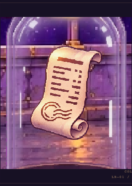
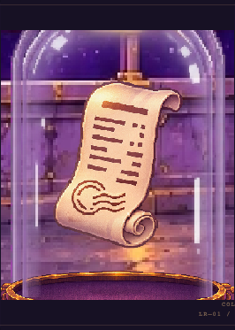
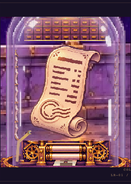
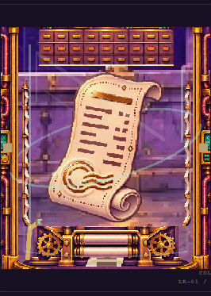
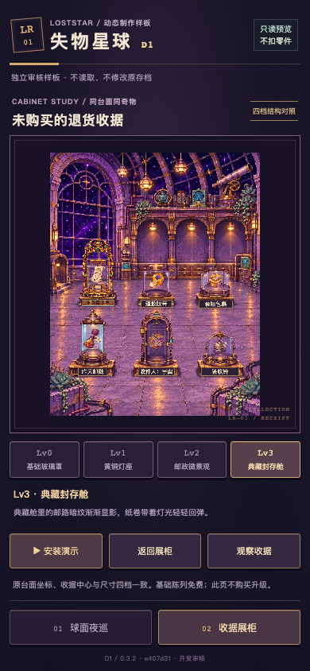
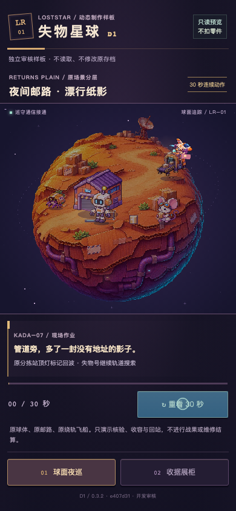
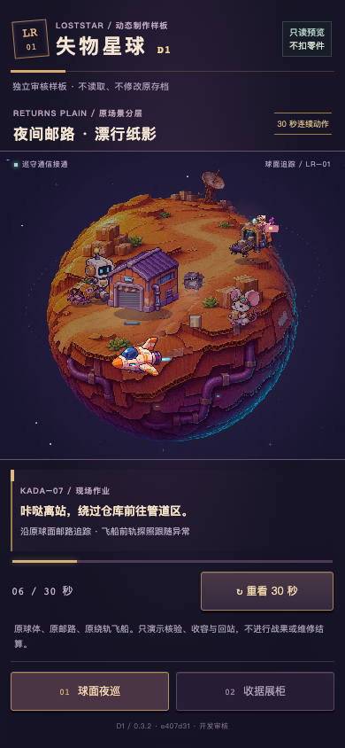
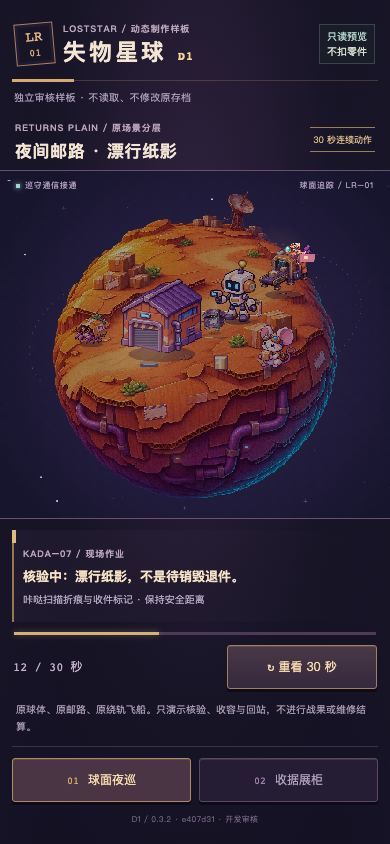
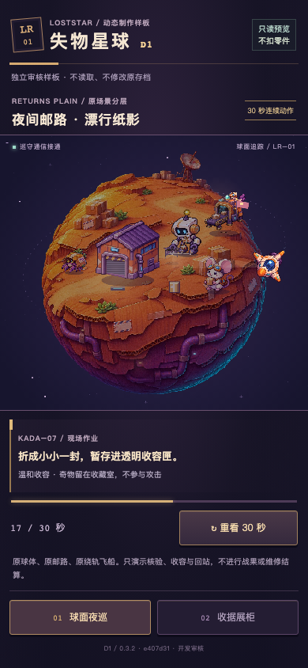
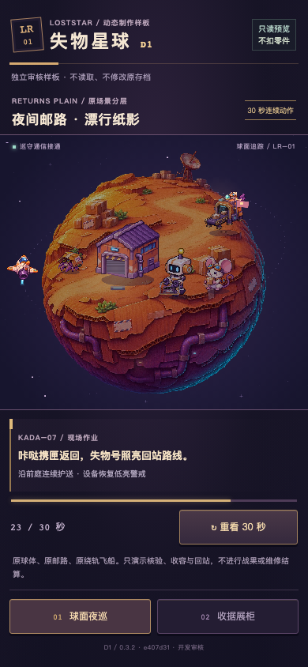
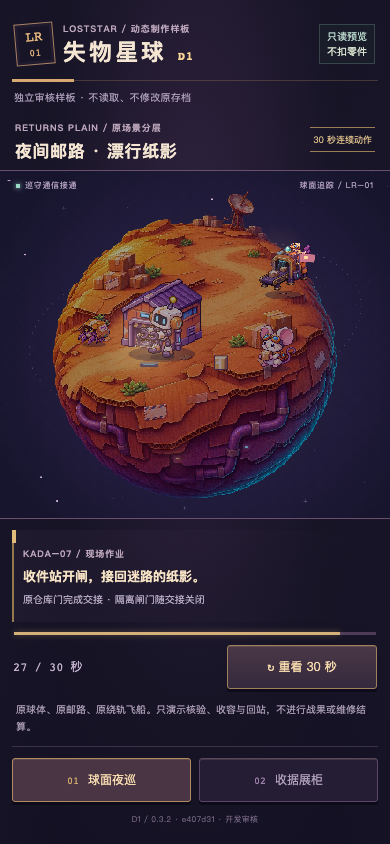
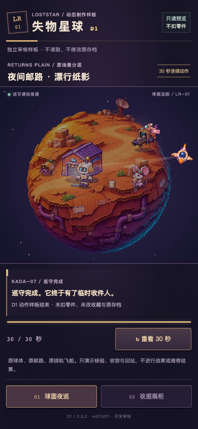
| 桌面引擎 | 采样窗口 | 独立绘制帧 / 实际频率 | CPU均值 / P95 |
|---|---|---|---|
| chromium | 6016ms | 120 / 19.95Hz | 3.18 / 3.40ms |
| webkit | 6013ms | 120 / 19.96Hz | 1.65 / 2.00ms |
收据频率按输出画布递增的data-frame去重计数。CPU数值覆盖完整renderFocused调用，包括纸面、光照和柜体绘制命令。GPU呈现时间和手机发热需另行测量。
| 桌面引擎 | 窗口 / rAF回调 | rAF中位 / P95 | 场景绘制CPU均值 |
|---|---|---|---|
| chromium | 6011ms / 361 | 16.70 / 16.70ms | 0.22ms |
| webkit | 6015ms / 362 | 17.00 / 18.00ms | 0.76ms |
这组采样来自Apple M2 Pro。rAF记录浏览器回调间隔，纸面实际绘制频率由上表单独报告。
Lv0到Lv1的纸张变化仍较克制，后续将结合手机观察反馈评估。当前六秒采样覆盖桌面Chromium与WebKit的移动触控仿真，长时间发热和真实WebView仍待验证。
8个独立上下文均核对了合成存档与偏好哨兵，应用运行期间记录的Storage访问为0。完整原始记录包含每次触控、构建、时间和错误审计。